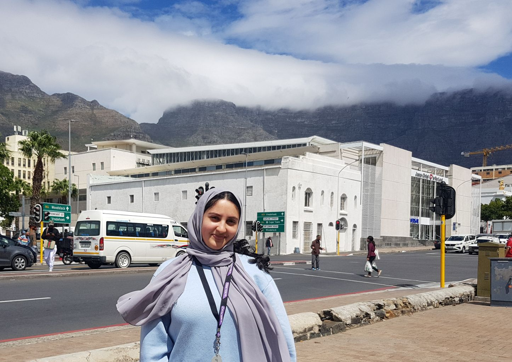

Saffah Khatib
Which City ?
Okinawa

- Okinawa is known for it's magical cherry blossom.
- It is also known to have one of the gratest aquriums in the world.
- Its only 6 hours away from the main cities such as Tokyo and Osaka.
Foreign language
Arabic
I would love to learn arabic.
It has a very long history and is a language close to my religion
| English | Arabic |
|---|---|
| Hello my name is Saffah | marhaban asmi saffah |
| How are you doing? | Kayf haluk? |
| Have a great day. | atamanaa lak ywmaan ezymaan. |
Historical Places
District Six Museum

District Six Foundation was founded in 1989 and the museum in 1994. It is a memorial to the forced movement of 60,000 inhabitants of various races in District Six during Apartheid. The floor of the museum is covered with a big map of the district with hand written notes of former inhabitants, which indicate where their houses were located.
City Hall

Cape Town City Hall is a large Edwardian building in Cape Town city centre which was built in 1905 It is located on the Grand Parade to the west of the Castle It is built from honey-coloured oolitic limestone imported from Bath in England.
Castle of Good Hope

Is a bastion fort built in the 17th century Built by the Dutch East India Company between 1666 and 1679, The Castle is the oldest existing building in South Africa.